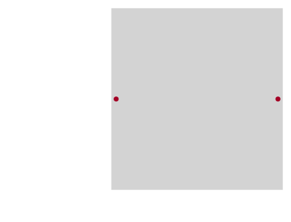
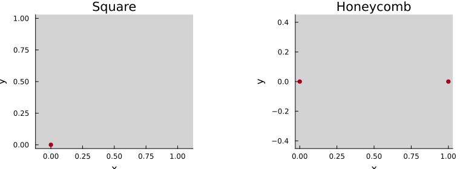

Tutorial 1 — Structure & Geometry
Notebook: extra/tutorial/Tutorial1_Structure.ipynb
This tutorial introduces lattice construction in LatticeQM, from specifying primitive vectors manually to using the extensive catalogue under LatticeQM.Geometries. By the end you will be comfortable building lattices, inspecting their coordinates, and producing quick sanity plots.
Learning goals
- Understand how
LatticeQM.Structureencodes lattice vectors and orbital positions. - Instantiate standard geometries (square, honeycomb, multilayer stacks).
- Visualise sites and bonds for 2D systems and inspect neighbour shells.
Prerequisites
- Julia basics and familiarity with matrix/vector notation.
- Plots.jl installed (
Pkg.add("Plots")) for quick visual checks.
Workflow outline
- Manual lattices — Define primitive vectors and fractional coordinates, e.g.
lat = Lattice([1 0; 0 1], [[0, 0] [0.5, 0.5]]). - Predefined geometries — Load helpers such as
lat = Geometries.honeycomb()orGeometries.honeycomb_twisted(n). - Inspection utilities — Query
Structure.coordinates(lat),Structure.getA(lat), orStructure.get_positions(lat)to confirm unit cell data. - Neighbour analysis — Use
Structure.getneighbors(lat; cutoff=...)to tabulate bonds or export them to downstream calculations. - Plotting — Render a quick layout with
plot(lat; repeat=[0:1,0:1])to confirm angular orientation and stacking.
Note on coordinates: Structure.Lattices.coordinates(lat) returns fractional positions in units of lattice vectors. Use Structure.Lattices.positions(lat) to obtain Cartesian coordinates (A * coordinates).
Live example — manual construction
figdir = joinpath(pwd(), "figures")
mkpath(figdir)
nothingprintln("Lattice vectors A =")
Structure.Lattices.getA(lat)3×2 Matrix{Float64}:
1.5 1.5
-0.866025 0.866025
0.0 0.0println("First few fractional coordinates =")
Structure.Lattices.coordinates(lat)[:, 1:2]3×2 Matrix{Float64}:
0.0 0.333333
0.0 0.333333
0.0 0.0p = plot(lat; repeat=[0:2, 0:2], axis=false, framestyle=:none, size=(420, 320))
savefig(p, joinpath(figdir, "honeycomb_layout.svg"))
nothing┌ Warning: No strict ticks found
└ @ PlotUtils ~/.julia/packages/PlotUtils/dVEMd/src/ticks.jl:194
Programmatic unit cells
using LinearAlgebra
manual = Structure.Lattices.Lattice()
Structure.Lattices.addbasis!(manual, [1, 0, 0])
Structure.Lattices.addbasis!(manual, [0, 1, 0])
Structure.Lattices.addbasis!(manual, [0, 0, 1], :finite)
Structure.Lattices.addextra!(manual, "sublattice")
Structure.Lattices.addorbitals!(manual, [[0, 0, 0.0, 0] [0.5, 0.5, 0.2, 1]])
Structure.Lattices.coordinates(manual)3×2 Matrix{Float64}:
0.0 0.5
0.0 0.5
0.0 0.2Pre-defined lattice helpers
lat_sq = Geometries.square()
lat_hc = Geometries.honeycomb()
p = plot(
plot(lat_sq; repeat=[0:3, 0:3], title="Square", size=(360, 260)),
plot(lat_hc; repeat=[0:3, 0:3], title="Honeycomb", size=(360, 260)),
size=(760, 280)
)
savefig(p, joinpath(figdir, "predefined_lattices.svg"))
nothing┌ Warning: No strict ticks found
└ @ PlotUtils ~/.julia/packages/PlotUtils/dVEMd/src/ticks.jl:194
Superlattices and custom filtering
lat_super = Structure.Lattices.superlattice(lat, [[5, -5] [5, 5]])
Structure.Lattices.foldPC!(lat_super)
plot(lat_super, "sublattice"; repeat=[0:2, 0:2], size=(380, 280))
import LinearAlgebra: norm
function honeycomb_holes(; N=12, radius=0.27)
base = Geometries.honeycomb()
Structure.Lattices.translate!(base, [1/3, 1/3, 0])
expanded = Structure.Lattices.superlattice(base, [[N, 0] [0, N]])
Structure.Lattices.foldPC!(expanded)
keep = map(x -> norm(x) > radius * norm(Structure.Lattices.getA(expanded)[:, 1]), eachcol(Structure.Lattices.positions(expanded)))
idx = findall(keep)
expanded.spacecoordinates = expanded.spacecoordinates[:, idx]
expanded.extracoordinates = expanded.extracoordinates[:, idx]
expanded
end
lat_holes = honeycomb_holes(N=12, radius=0.27)
plot(lat_holes, "sublattice"; markersize=2, repeat=[0:2, 0:2], size=(380, 280))Ribbon reductions
lat_arm = Structure.Lattices.reduceto1D(Geometries.honeycomb(), [[1, 1] [12, -12]])
plot(lat_arm, "sublattice"; supercell=[48], markersize=2, size=(420, 280))
Validation checklist
- Do generated plots match the expected symmetry (e.g. honeycomb sublattices)?
- Are neighbour counts stable when you tweak the cutoff?
- After saving figures, confirm they appear in
extra/tutorial/output/.
Suggested extensions
- Swap in
Geometries.triangular()orGeometries.square()to compare coordination. - Attach custom metadata (e.g. layer labels) via the
extra_dimensionskeyword. - Feed lattices directly into
Operators.grapheneand continue with Tutorial 2.